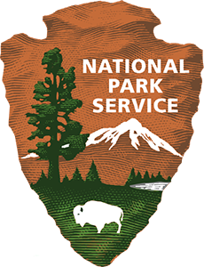

Since 1916, the American people have entrusted the National Park Service with the care of their national parks. With the help of volunteers and park partners, we are proud to safeguard these nearly 400 places and to share their stories with more than 275 million visitors every year. But our work doesn't stop there.
We are proud that tribes, local governments, nonprofit organizations, businesses, and individual citizens ask for our help in revitalizing their communities, preserving local history, celebrating local heritage, and creating close to home opportunities for kids and families to get outside, be active, and have fun.
